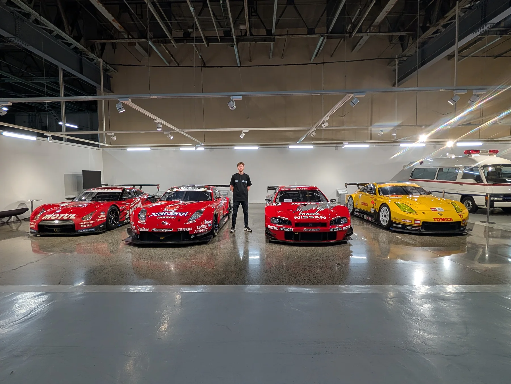
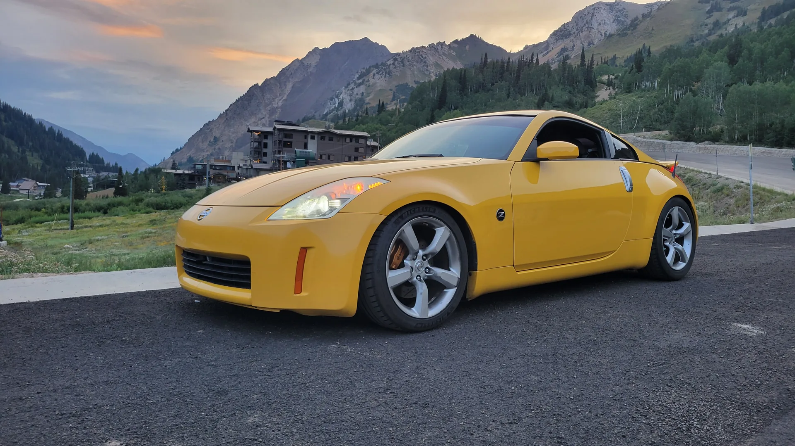
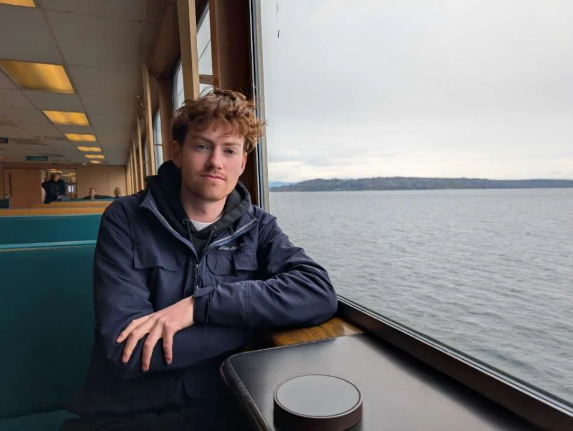

about me.



My name is Alex Murdock. I do full-stack web development, mobile app development, AI-powered product development, and ServiceNow development. I am located in Riverton, Utah and am a devoted car enthusiast. When I am not coding or designing a new project, I am usually working on my 35th anniversary 350Z or spending time at a car meet with my friends. My favorite cars that I have driven are a heavily modified R35 GTR and a Porsche GT3 RS 991.2.
I taught myself how to code when I was 15 years old using HTML and CSS to create basic web pages, and ever since then I have been hooked on building things with technology. During my senior year of high school, I attended the Jordan Academy for Technology and Careers (JATC), where I earned four Microsoft Technology Associate certifications, three Adobe Certified Professional certificates, and a Bottega coding foundations certificate. That experience, along with early internship work, turned coding from an interest into the career I wanted to pursue.
I graduated from the University of Utah in May 2026 with a Bachelor of Science in Software Development and a minor in Business, following the Web and Mobile track. Professionally, I work as a ServiceNow Developer at the University of Utah Health and continue building full-stack, mobile, and AI projects outside of work.
The project I am most proud of is StyleStreak, the AI-powered wardrobe and outfit planning app I created for my senior capstone project. I came up with the idea, recruited the four-person team, led the product direction and project planning, shaped the architecture, and contributed roughly 70 percent of the current codebase. I built major parts of the Firebase foundation, outfit generation, trip planning and packing, closet intake and filtering, AI integrations and AI benchmarking and Analysis tooling, testing, and CI/CD. StyleStreak won first place at the University of Utah Senior Capstone Demo Day.